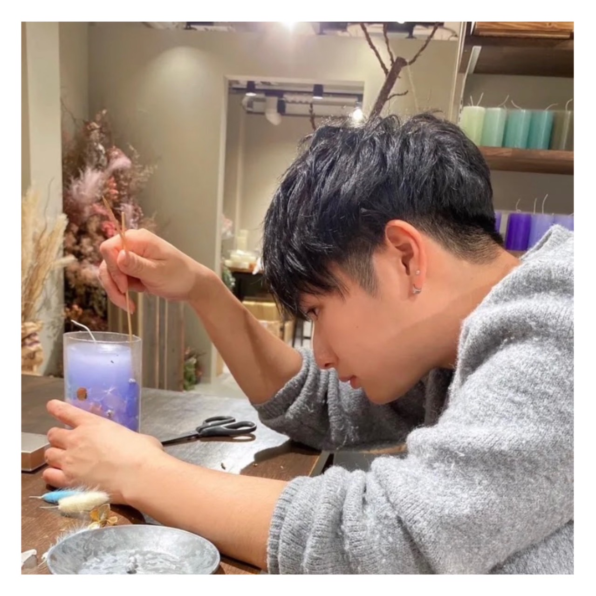
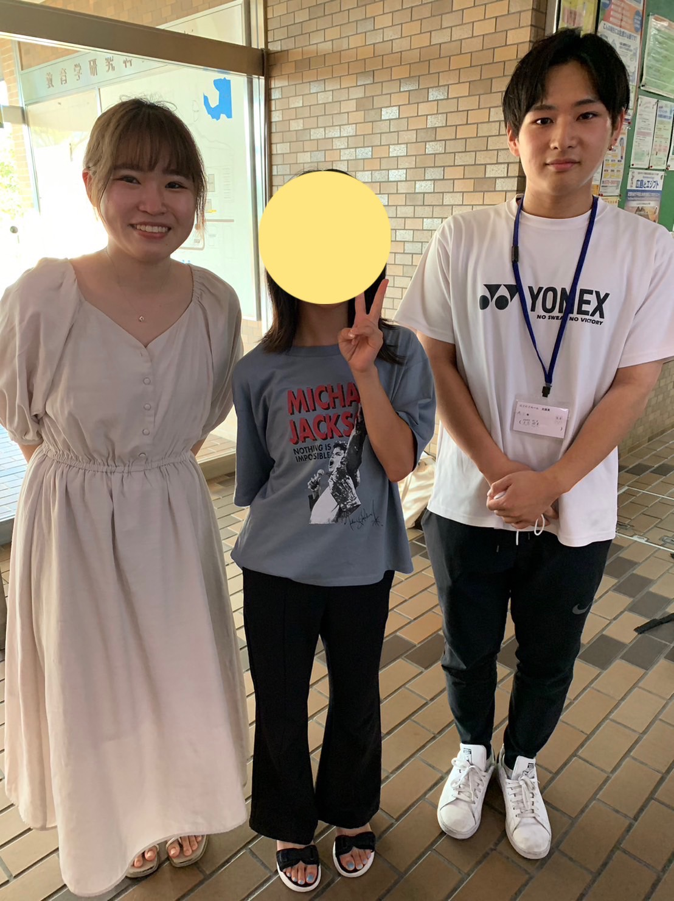
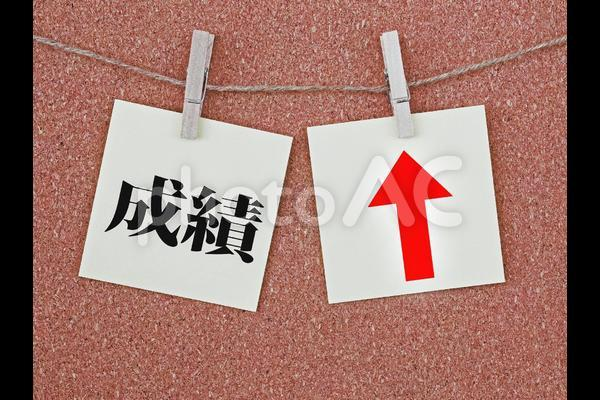

About

大方悠真
- 24歳 広島県広島市出身
- 広島大学院で「子どもの成績を上げる勉強法・指導法」の開発をしている
- 趣味は旅行・空手・スノーボード・料理・ギターなど
Works

文章の意味が分からない児童に対して図表活用を促す支援
- 対象：小学5年生女子
- 期間：2023年4月～2023年８月
- 指導した方略：図表活用方略
- 成果１：文章問題の正答率が向上した
- 成果２：算数に対する自己肯定感の向上

研究計画
- 題目：生徒の教訓の質を高める調査研究-ケアレスミスに着目して
- 対象：中学生
- 介入：ケアレスミスの再確認と誤答分析の活動
- 仮説：ケアレスミスの定義づけにより，教訓の質が向上する
- 教訓帰納についてこちら